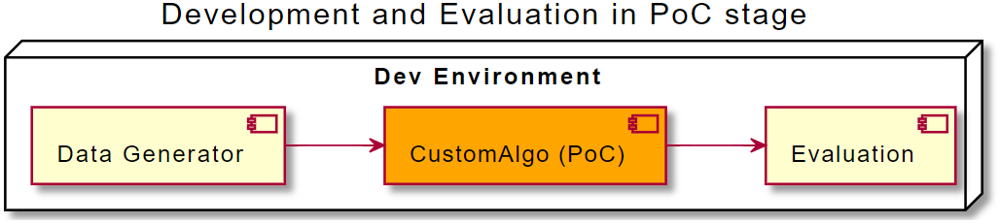
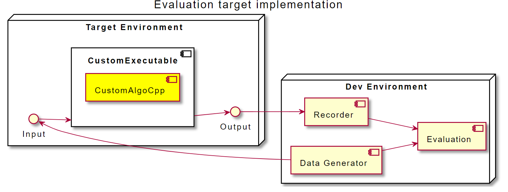
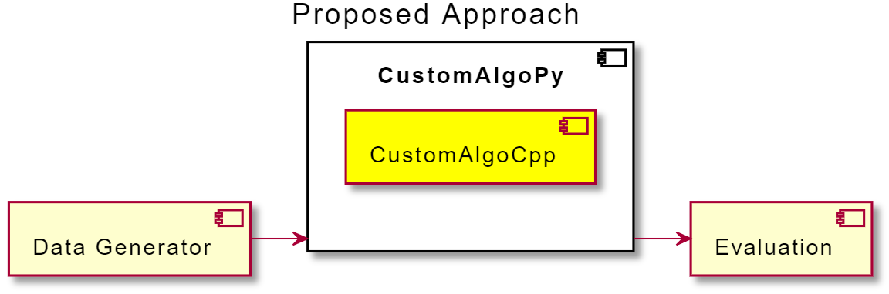

TLDR;
In model based design paradigm one often implements a proof-of-concept solution in a scripting language before porting the logic to a more performant low-level language like C/C++. This article describes the benefits of calling production-ready (C/C++) ports in Python for functional evaluation and analysis. Assessment tools developed previously during the experimentation stage can be reused. Furthermore, the complexity for experimentation with various internal parameters is reduced, which can optimize costs and expensive debugging prior to the final deployment. In the end of the article the key benefits and limitations are presented.
Motivation
Often, algorithms implemented in the automotive or other industrial domains are developed using the model-based design (MbD) idiom [1]. Roughly the workflow involves:
- Definition of computation steps in a high level (or even visual) language. E.g.
val = read_sensor()orres = compute_mean(val)etc. - Simulation and experimentation (with virtual/artificial data or system behaviour). Creating visualizations or performance assessments of the algorithm.
- Code generation (porting) for the target environment (e.g. C for embedded devices or C++ for a specialized server hardware).
- Finally, testing of the generated code on the target environment
Thus approach allows fast (rapid) prototyping and high quality code, since the generators are often well tested.
Companies like Mathworks provide specialized tools across the whole development chain. Often those tools are expensive for small projects so a smaller solution may be suitable.
However, for small projects (with a smaller budget) the developers may create a Proof of Concept (PoC) for the algorithm in a scripting language of their choice (like Python or Scala) before turning to C/C++ ports. In addition to that, the engineers usually want to calculate some quality metrics like mean squared error (MSE) or accuracy (for classification tasks) to show (off) how well the logic is performing.
The “architecture” on the development machine would look similar to the following diagram:

The functional blocks may be code blocks of a single Python script or alternatively, a collection of scripts passing data files between them.
After the stakeholders are satisfied, the developers may refactor the codebase for production use. Note that keeping the same language as in PoC stage is only possible if the algorithm is intended to run on the same type of machines as the developers use. More often, the target platform (e.g. an embedded device like a vacuum cleaner robot) requires a device specific implementation – the engineers are forced to rewrite the logic in a lower-level lanauge. Even if the target platform is a “normal” PC, the engineers want to do the reimplementation for execution speed and scale.
But how to make sure that the final implementation is functionally as good as the PoC? Please note, that a functional evaluation involves a pure evaluation focusing on the algorithmic part first, often ignoring communication issues and other intergration effects.
A naive assessment approach would involve compiling generated code, transmit the build to the target device, generate some (artificial) input data, run the executable and simultaniously record the algorithm’s outputs:

Even if the developers use an emulator for the target device or simply compile a regular executable on their develepoment machine, they always have to introduce some overhead “measuring” the algorithm’s internals and its outputs. Of course, in return for the additional complexity the engineers will be able to evaluate the real world performance including communication delays and performance fall-offs. Also they will be more sure that system libraries on the target device are working as intended. Still, the measurement brings additional efforts to the workbench and slows down the development.
Let’s summarize the key benefits and downsides of the approach above:
| Advantages | Drawbacks |
|---|---|
| Execution on the target device | Data feed to the target device has to be implemented |
| Impact of execution speed, data transmission and network errors can be evaluated | Recording data introduces more complexity (and/or special debugging hardware) |
Proposed solution
For the functional assessment following architecture is proposed. The low-level language (C++) port is wrapped into a shared library and called from the high level language (e.g. Python). The (discrete) wall time is simulated in a for loop the outputs are recorded to a container (like list()) or saved to disk. Finally the outputs of the algorithm are evaluated in the same manner as in the PoC stage.

Addionally to addressing the drawbacks from the last section the following can be achieved following easily:
- change the internal parameters within the loop
- apply (time-varying) noise to input data
- observe and record internal state variables like buffers or counters
- reset/manipulate the internal state
In the next section provides a basic code overview required for the proposed approach.
Software architecture
C++
First, an implementation in the low-level language is needed. Most probably, the required methods like (getters and setters), step() or run() are already implemented, so the proposed changes to match the code sceleton below are expected to be small.
// customalgo.hpp
#include <vector>
class CustomAlgo {
public:
CustomAlgo(float param);
// the algorithm main routine for a single timestep
float step(float input);
void set_param(float p);
void reset();
// interface to the internals
std::vector<float> get_state();
// attributes and methods ...
private:
float _param;
std::vector<float> _state;
};
Python interface (pybind11)
The following module defines a Python wrapper for the C++ object above. Take a look at the official pybind11 documentation.
#include <pybind11/pybind11.h>
#include "customalgo.hpp"
namespace py = pybind11;
PYBIND11_MODULE(customalgo, m) {
py::class_<CustomAlgo>(m, "CustomAlgo")
.def(py::init<const float &>()) // constructor
.def("step", &CustomAlgo::step)
.def("set_param", &CustomAlgo::set_param)
.def("get_state", &CustomAlgo::get_state);
}
After a successful compilation a .so (Unix) or .dll (Windows) shared library is available, which can be imported into any Python module.
Python
On the Python side the possibilities are endless. A developer may call step() methon in a loop and record the results. Alternatively one may instantiate the algorithm multiple times and run with same data and several parameters, parametrize it on the fly etc …
import random
# shared lib
import customalgo
# your evaluation code (e.g. from PoC)
from eval import evaluate
algo = customalgo.CustomAlgo(42.42)
# for storing outputs
results = list()
# for storing internal states
states = list()
# the loop simulates time
for t in range(10):
inp = random.randn() # example input
# try out a parameter change within the loop
if t == 5:
algo.set_param(1234)
# collect internal states for detailed analysis
states.append(algo.get_state())
res = algo.step(inp) # run a single step
results.append(res)
# evaluate and analyse
evaluate(results)
detailed_analysis(states, results)
Key Benefits
Let’s summarize the key benefits of making the logic accessible in a high level language like Python:
- Avoid data feeding and recording efforts for the target environment or hardware. Manipulate or reset the internal state within the simulation loop in the scripting language.
- Evaluate your algorithm with various inputs and parameters without additional C++ code for data feeding and result conversion.
- Simulation, analysis and evaluation are directly in Python, libraries like
scikit-learnfor evaluation ormlflowfor experiment tracking can be used effortlessly. - Compare your PoC with the final implementation easily (even in the same
for-loop)
Limitations
Please note that the proposed approach has also some limitations which you have to be aware of, before starting intergrating the workflow in your project:
- Use it for functional assessment only. It is not a replacement for a full system test.
- Target device specific routines relying on embedded circuits, e.g. ASICs for audio processing or TPUs for neural network inference may be unavailable on your (
unix-oid) development machine. Those have to be reimplemented/replaced in C/C++. - Similar to the statement above, in case you have proprietary target device specific implementations of libraries you link to, first check if they are reliable and behave in the equal manner to those on your development machine.
You want more?
If you are interested in the concepts and challenges of algorithm development I recommend following resources:
- An article of an audio processing engineer bridging the gap between Python and C++ code with
pythran. The library is not very mature but the charming idea is to skip the C++ coding entirely. - Take a look how Mathworks pitches model based design
- A ROS1 tutorial on how to feed a C++ node implementation from Python.
- Numba for JIT compiling of python routines, an interesting alternative for computing demanding application before porting everything to C++.
- prometeo an experimental Python-to-C transpiler and domain specific language for embedded high-performance computing. The output of the package is a (Python-) indenpendent C code.
Credits
Thanks to @annaformaniuk and Christian for discussions and proof reading.
References
[1] https://en.wikipedia.org/wiki/Model-based_design
[2] pybind11 — Seamless operability between C++11 and Python